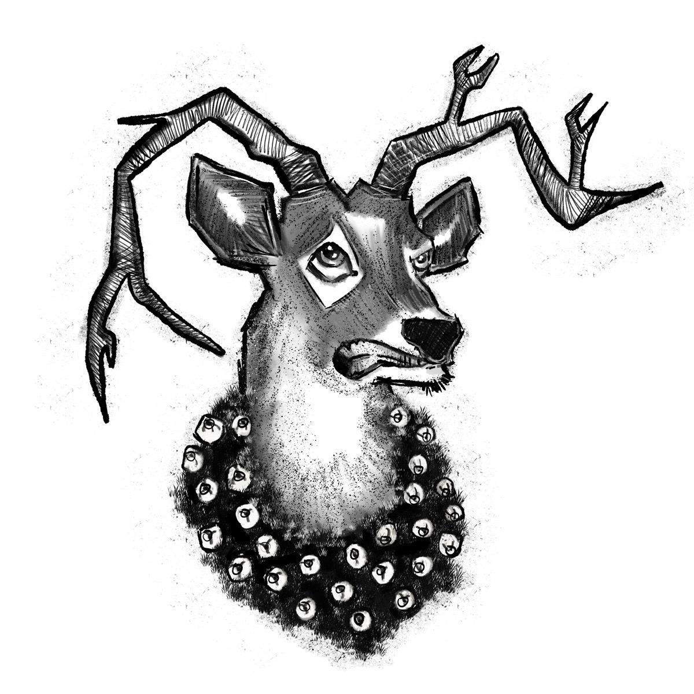

Notice the good
Write down one kind thing someone did for you today. Tell them how it made you feel.

Hugh wanted a dog for Christmas.
Santa gave him a Blessing Box instead.
In Liv Fuller’s Christmas adventure, Santa’s unusual gift gives Hugh a chance to prove he’s ready for a dog of his own.
An independent reader might finish the book and ask for a Blessing Box. Or perhaps families read the story together, and a loving adult wants to create a meaningful challenge for a child.
Either way, you choose the goal, write the letter, and cheer the child on as they work toward a reward.
But be sure to check with Santa first. You never know. He might plan to give your child a magical Blessing Box Experience, just like he gave Hugh.
OPEN A LITTLE CHRISTMAS WONDER
One boy. One unusual gift. An unforgettable adventure in discovering the greatest gifts we have to give.
Open the storyA Christian Christmas fantasy for ages 8–12
and the young at heart.

NOT QUITE WHAT HE ASKED SANTA FOR…
But an out-of-sorts Santa has something else in mind—an idea his elves think is nuttier than a fruitcake.
When Hugh opens the Blessing Box, his dream crumbles like a Christmas cookie. Then he discovers that the mystical box holds an invisible key called opportunity. Could it help him prove he’s ready for a dog?
From one Christmas to the next, this sixth grader on the autism spectrum faces friendship, bullies, betrayal, and a decision that could change everything. His mischievous best friend—and one special elf—may have a part to play.
Meet Hugh in Chapter TwoTHE BEST GIFTS
AREN’T ALWAYS
wrapped.
FOR PARENTS AND OTHER ADULTS
Snuggle up with your favorite young reader and step into the magical world of The Blessing Box. Share laughter, surprises, a little suspense, and heartfelt conversations about kindness, courage, and believing in yourself.
Read one of the twenty chapters each night, or lose yourselves in the story on a cozy winter afternoon. Some Christmas blessings are so wonderful they stay with us year round.
Begin your read-alongBRING THE SPIRIT OF THE STORY HOME
A small act of kindness can make an ordinary day feel extraordinary.
Try one of these family activities inspired by the story’s themes.
Write down one kind thing someone did for you today. Tell them how it made you feel.
Set the screens aside. Read together, take a walk, or ask someone about their favorite Christmas memory.
Leave a cheerful note for someone who could use a smile.

YOUR FIRST PEEK INSIDE
Meet Hugh in “A Stinky Afternoon”—Chapter Two of The Blessing Box.
Read the sample chapterIllustration by Quincy Battieste
A FEW THINGS TO KNOW
Request a release notification on Liv’s author website.
This story is perfect for young readers between ages 8 to 12, for the young at heart, and for those younger than 8 as a family read-along.
A heartwarming, inspirational, Christian-based Christmas fantasy—with reminders that Jesus is the reason for the season.
Yes, The Blessing Box has at least one illustration per chapter. All illustrations by Quincy Battieste.
Yes! An adult can submit a review using the reader-feedback form on Liv’s author website. Reviews are reviewed privately, and permission to quote is optional.
KEEP A LITTLE CHRISTMAS MAGIC ON YOUR CALENDAR